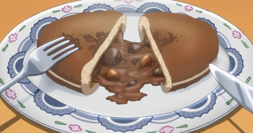

Chocolate Curry Buns
If you’re looking for a quicker, more authentically Japanese curry bun, replace the curry roux and filling with a packet of instant curry and follow the instructions on a package. This recipe is a “high class”, very British way of looking at the curry bun, with attention paid to how Sebastian cooked his in the show. Notice the atypical additions of black pepper and red wine, frying the bun instead of baking, and, most importantly, the chocolate. In short, his is simply one hell of a curry bun recipe.
Ingredients:
- Curry roux:
- 3 tbsp. butter
- 1/3 cup flour
- 2 tbsp.. garam masala
- 1-2 tsp freshly ground black pepper (depending on how spicy you want it)
- 1 tbs. tomato paste
- 1 tbs. Worcestershire sauce
- Dough:
- 2 and a half cups all-purpose flour
- 1 tsp. dry yeast
- 2 tbsp. sugar
- 1 tsp. salt
- 1 tbsp. skim milk powder
- 1/2 cup water
- 1 egg
- 2 tbsp. butter
- Filling:
- 2 tbsp. oil
- 1 small onion, sliced thin
- 1 clove of garlic, minced
- 1/2 pound beef chuck roast, cubed, or stew meat
- 1/4 cup red wine (substitute 1/8 cup balsamic vinegar and 1/8 cup all-natural grape juice if you can’t get wine)
- 1 carrot
- 1 medium pre-cooked yukon gold potato
- 1 tbsp. apple puree or apple sauce
- 1 cardamom pod
- 1 whole star anise pod
- 1 bay leaf
- 1/3 cup peas (optional)
- Half of a bar of dark chocolate
Instructions:
- First, we’re going to start with the roux. Melt the butter over medium low heat.
- Add the flour and whisk the butter and flour together in the pan until the mixture turns a golden brown.
- Add the garam masala and black pepper and stir to combine, then add the tomato paste and Worcestershire sauce and combine. Continue to cook until it becomes thick and paste-like. Remove from heat and set aside until the meat and veggies are ready.
- Combine yeast, water, and sugar in a bowl. Let it sit for 5-10 minutes, until foamy.
- Add the rest of the dough ingredients and knead for 8-10 minutes.
- Cover with a dish towel and allow dough to rise in a warm place until doubled in size, about 1 to 1½ hours. If it’s cool in the kitchen, I frequently turn on a stove top burner, and let the dough sit on the counter near it to help the rising process.
- Divide the dough into 8 equal portions. Let rest for 10 minutes (make sure not to let them dry out, cover them with a damp paper towel or two).
- Heat 1 tablespoon of oil in your pan. Pat the beef down with a paper towel to remove any excess moisture, sprinkle some salt and pepper on the meat, and dust with a bit of flour. Once the pan is hot, add your meat, cooking for about 6-7 minutes on each side, or until nice and brown. Then, put the meat into a bowl and set aside.
- Heat oil in a pan, and saute onion and garlic. While sauteing, grind the cardamom and anise.
- Add the browned beef, wine, water, carrots, potatoes, salt, apple puree, cardamom, anise, and bay leaf, and then bring to a boil over high heat.
- Turn the heat down to medium low and simmer partially covered until the carrots are tender (about 45 minutes).
- Add in the curry roux that you set aside in step 3 and the chocolate, and stir until the roux and liquid in the pan combine and thicken into a nice curry sauce. Set aside to cool, and don’t forget to remove the bay leaf.
- Dust your hands with flour! Flatten the dough balls into a round disc, place a spoonful of filling in the middle, and wrap wrap the edges around the filling. Gently shape each dough ball into a bun.
- In a frying pan, heat about an inch of oil (vegetable, canola, or sunflower oil are preferred). Add the buns, however many will fit in your pan at a time. Fry them on medium/low until golden brown, turning over to cook each side.
- Let them cool, then present to the judges. Or your friends. Or just eat them yourself.